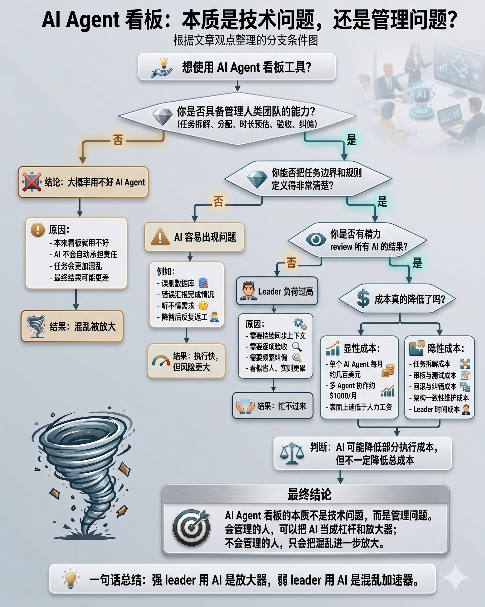

There is a Kanban tool designed for AI agents called Multica. Its idea is to be deployed locally: locally running AIs such as Codex, Claude Code, and Antigravity connect to the board as agents, after which you can assign tasks to AI agents, manage project progress, and so on.
Seeing this product prompted some thoughts.
How should we understand the product itself? I think we can understand it in the following way.
First, Kanban tools are well-known project-management tools such as Jira, Linear, GitHub Project, and Notion.
Next, let us set AI aside and talk about people: real people, real employees, and real engineering teams. A leader who can manage an engineering team clearly through a task board understands how tasks should be assigned, how task duration and difficulty should be defined, how results should be accepted, and so on. An AI Agent Kanban tool is meaningful only for a leader who can handle tasks properly and arrange project progress in an orderly way.
In other words, this kind of product—replacing employees with AI and assigning work to AI through a Kanban tool—is needed only by a leader who already has the ability to manage “people” well.
Compared with humans, AI has strengths and weaknesses. Its strength is efficiency: give it a clear task, and it can execute it very well. AI’s weakness is that it does not need to report its work proactively, it has no emotions, and it does not need to take responsibility. If an AI deletes your database, forcefully reports incorrect information, or suddenly becomes stupid and can no longer understand human language, what can you do to it? Scold it? Dock its pay? Reason with it and paint a grand vision to make it feel guilty?
Therefore, an AI Agent Kanban tool becomes useful only when you are already a leader capable of managing employees or subordinates and are trying to use AI to reduce costs and increase efficiency. At the same time, that leader must carefully consider whether they can actually use AI well.
The next question is this: it is obvious that AI can improve efficiency, but can AI really reduce costs? Using Codex to write code for three or four hours a day requires a $100 monthly plan. For heavier usage—roughly six or seven hours of runtime a day—a $200 monthly plan is necessary.
Considering that Codex also has weekly and daily limits, fully using a $200 plan certainly will not be enough, so let us estimate $300 per AI agent. The point of a Kanban tool is naturally to run multiple agents at the same time. If you need only one, you can simply use it within Codex and do not need a board.
For a small engineering team of three people, then, let us estimate the cost of AI agents at $1,000 per month.
In other words, an engineering team that may originally have consisted of 1 leader + 2 seniors + 1 junior could be reduced to 1 leader + 2 Codex + 1 Antigravity. If we count subscription fees alone, does that not save a considerable amount of money?
However, there is a small additional issue to consider. In a human team, the leader does not need to bear responsibility alone and only needs to review and accept the work. Under an agent-based configuration, however, the leader will inevitably be busier and more exhausted. They must review all AI work, manually type tasks to the AI—even voice conversations and meetings are unavailable—and define task boundaries and rules extremely clearly. Anyone who has done engineering work will understand: although it appears that AI has replaced a large amount of human labor, it has also greatly increased the leader’s workload. Under this model, the leader is bound to become overwhelmed.
We can therefore take a step back and use a model of 2 leaders + 2 Codex + 2 Antigravity—that is, (1 leader + 1 Codex + 1 Antigravity) * 2. In this arrangement, the workload of each leader, or engineer, is barely reasonable and the work can be completed properly. What does the cost become under this model?
Let us continue to the next question. The entire discussion so far has assumed that the leader already has the ability to manage “people” and uses AI on top of that foundation. What if the leader, or engineer, does not have the ability to manage humans in the first place?
Combined with the weaknesses of AI mentioned earlier, the work would undoubtedly become a complete mess. Have we—or have you—never encountered a leader with terrible management ability in our past work experience? Imagine such leaders managing a collection of AI agents that do not need to take responsibility. Would that really allow the work or project to be completed better?
Overall, a project task-board tool is not actually a technical problem but a management problem. People capable of using Kanban well do not need AI that badly, while people incapable of using Kanban well cannot use AI well either.
